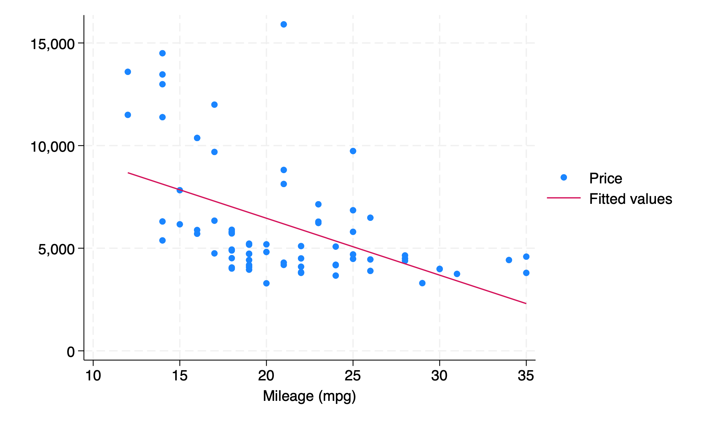

Source | SS df MS Number of obs = 73
-------------+---------------------------------- F(1, 71) = 23.46
Model | 157594949 1 157594949 Prob > F = 0.0000
Residual | 476872144 71 6716509.06 R-squared = 0.2484
-------------+---------------------------------- Adj R-squared = 0.2378
Total | 634467092 72 8812042.95 Root MSE = 2591.6
------------------------------------------------------------------------------
price | Coefficient Std. err. t P>|t| [95% conf. interval]
-------------+----------------------------------------------------------------
mpg | -277.2682 57.24014 -4.84 0.000 -391.4018 -163.1346
_cons | 12006.01 1241.244 9.67 0.000 9531.039 14480.98
------------------------------------------------------------------------------ECN 102: Analysis of Economics Data
Chapter 7: Bivariate Statistical Inference
Asymptotic Normality and the T-Statistic
Previously, we said that our OLS estimator \(b_2\) was asymptotically normal with \(b_2\sim N(\beta_2,\sigma^2_{b_2})\) or that \(\frac{b_2-\beta_2}{\sigma_{b_2}}\sim N(0,1)\) when \(n>30\).
Without knowing \(\sigma_u\) we cannot know \(\sigma_{b_2}\left(=\frac{\sigma_u}{\sum_{i=1}^n(x_i-\bar{x})^2}\right)\)
Instead, we replace \(\sigma_u\) with \(s_e\) and construct \(T\sim(n-2)\).
We can now use this asymptotic normality to conduct hypothesis testing on our estimated slope coefficient, similar to our sample mean \(\bar{x}\).
Testing the Slope Coefficient
For example, imagine we run a regression of y on x and obtain \(\hat{y}=2+0.5x\). Can we say that there is a statistically significant association between x and y? Can we say if the slope coefficient on x is significantly different from 1? From 0.75?
Just like before, we will need to list our hypotheses, construct a test statistic, and then utilize the p-value or critical value approach to reject or fail to reject our null hypothesis to answer these questions.
Standard Error of the Slope Estimator
Just like before, we do not know the true population standard deviation for our estimator \(\sigma_{b_2}\). Instead, we use the sample standard deviation of our estimator, \(s_{b_2}=\frac{s_e}{\sqrt{\sum_{i=i}^n(x_i-\bar{x})^2}}\).
Since we are now using the standard error of \(b_2\) in the denominator, the statistic we construct will be a t-statistic:
\[T=\frac{b_2-\beta_2}{s_{b_2}}\sim T(n-2)\]
We now lose two degrees of freedom instead of one, due to the fact that we are estimating both \(\beta_1\) and \(\beta_2\).
Hypothesis Test for \(\beta_2 = 0\)
We could use any point estimate in our null hypothesis, but the most common test is whether or not \(\beta_2=0\). What would this result mean in words if it were true?
\[\begin{align*} H_0: \beta_2&=0\\ H_A:\beta_2&\neq0 \end{align*}\]
. . .
\(\Rightarrow\) \(\beta_2=0\) would mean that there is no association between x and y and that the true population model is \(y=\beta_1+u\).
Simplified Test Statistic
With \(H_0: \beta_2=0\), our test statistic simplifies to:
\[T=\frac{b_2-0}{s_{b_2}}=\frac{b_2}{s_{b_2}}\]
We compute this t-statistic based on our sample data and then compare it to a critical value, or else calculate the p-value for such a t-statistic and compare that to our significance level \(\alpha\). What does this p-value mean in words?
One-Sided vs. Two-Sided Tests
The test above is a 2-sided hypothesis test: remember this means we need to use \(\alpha/2\) as our significance level in each tail. We could also construct a 1-sided hypothesis test for \(\beta_2\) - what would such a test look like? How would it differ from the 2-sided test? Would it be easier or harder to reject our null?
Confidence Intervals for \(\beta_2\)
We can also use our sample data to construct a confidence interval for \(\beta_2\) using a familiar formula: \[b_2\pm t^*_{n-2,\alpha/2}\times s_{b_2}\]
Like before, this will give us a range we are \(100(1-\alpha)\%\) sure contains our true parameter value \(\beta_2\). We default to a 95% CI (where \(t^*_{n-2,0.025}\approx2\)) but can compute a 90% or 99% CI as needed. As before, a lower % interval will be narrower and an interval constructed from a larger sample size will be more precise and thus smaller.
Equivalences: P-Value, Critical Value, and CI
Like with univariate inference,
The p-value and critical value approach should always give us the same conclusion about whether or not to reject our null hypothesis, as they are inverses of each other
The 2-sided hypothesis test and confidence interval approaches should also always give us the same conclusion about whether or not to reject our null hypothesis, as they are also inverses of each other
Stata Regression Output Overview
Helpfully, Stata anticipates that we will want to conduct such a 2-sided hypothesis test for \(\beta_2=0\) (our “test of association”) and provides us with \(b_2,s_{b_2}\), our t-statistic, and our p-value for that t-statistic automatically when we run a regression. If we run a multivariate regression instead, Stata will report these quatities for each regressor separately (how nice!)
Regression of Price on MPG
Here we regress \(price\) on \(mpg\):
. . .
\(\Rightarrow\) There is a statistically significant association between mpg and price based on p-value approach (or confidence interval of \(\beta_2\)), as our p-value for the test of association (on \(b_2\) for \(mpg\)) \(<0.05\).
Scatter Plot: Price vs. MPG
What do we notice about our data?

Robust Standard Errors
All of the above inference has relied on assumptions (1)–(4) holding: linearity, unbiasedness, homoskedasticity, and independence. However, we may want to relax the assumption that the variance of our residuals does not vary with x.
To do this, we employ robust standard errors, a class of standard errors designed to accomodate heteroskedasticity. We will not look at the exact formula, but Stata has an easy way to implement these robust or White robust standard errors (after Halbert White) in our regression, provided assumptions (1), (2), and (4) still hold.
reg y x // regress y on x
reg y x, robust // regress y on x with robust se'sWhy Correct Standard Errors Matter
Why is having correct standard errors so important?
. . .
Remember our t-statistic was constructed with \[t=\frac{b_2-\beta_2}{\boldsymbol{s_{b_2}}}\]
I compute \(b_2\) directly from my sample and I assume \(\beta_2\) under the null. Thus, my standard error of \(b_2\), the denominator, will determine the magnitude of my t-statistic. If my standard error is incorrect, my t-statistic will also be incorrect, meaning I may incorrectly reject or fail to reject my null.
. . .
In order to avoid these errors, I must ensure that my standard error is being calculated properly! Using robust SEs will change \(s_{b_2}\), my t-stat, my p-value, and my CI, but not my estimate of \(b_2\) itself.
Type I and Type II Errors
Finally, we introduce the notion of type I and type II errors. A type I (one) error is a false positive and a type II (two) error is a false negative. In the case of our hypotheses, a type I error is rejecting our null hypothesis when we should not and a type II error is failing to reject our null when we should.
. . .
We will talk more about type I and II errors with multivariate regressions. For now, it sufficies to say that the test size we select, \(\alpha\), will be equal to our probability of committing a type I error.
. . .
This makes sense, as \(\alpha\) is the level of significance we compare our p-value to. This also means that we have an \(\alpha\) chance of drawing such a statistic by chance and that our null hypothesis really is true, but we reject it by mistake.
Type I and Type II Errors: Courtroom Analogy
We can frame type I and type II errors in terms of innocence, guilt, and conviction:
A type I error, a false positive, would be an innocent person being found guilty (convicted)
A type II error, a false negative, would be a guilty person being found not guilty (not convicted)
In Economics, our first priority for inference is controlling our type I error probability by selecting \(\alpha\) small enough (but not too small) and then controlling our type II error probability by selecting the estimator that minimizes variance (the “best” estimator). Why could we not set \(\alpha=0\) and have no type I error probability?
End of Lecture Material
Knowledge Check 7
Suppose we regress y on x and obtain \(\hat{y}=3+2x\) with \(n=50\). We also obtain \(s_{b_2}=0.5\) and are given the following Stata output:
invttail(50,0.025)=2.0085591
invttail(50,0.05)=1.675905
invttail(49,0.025)=2.0095752
invttail(49,0.05)=1.6765509
invttail(48,0.025)=2.0106348
invttail(48,0.05)=1.6772242Conduct the standard hypothesis test for \(\beta_2=0\) with the information provided. List your hypotheses, calculate your test statistic, and give a conclusion based on \(\alpha=0.05\).
What is the type I error probability of this test?